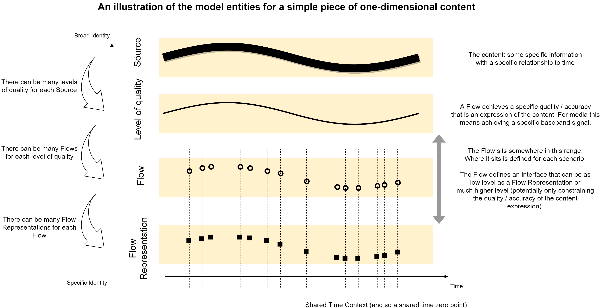
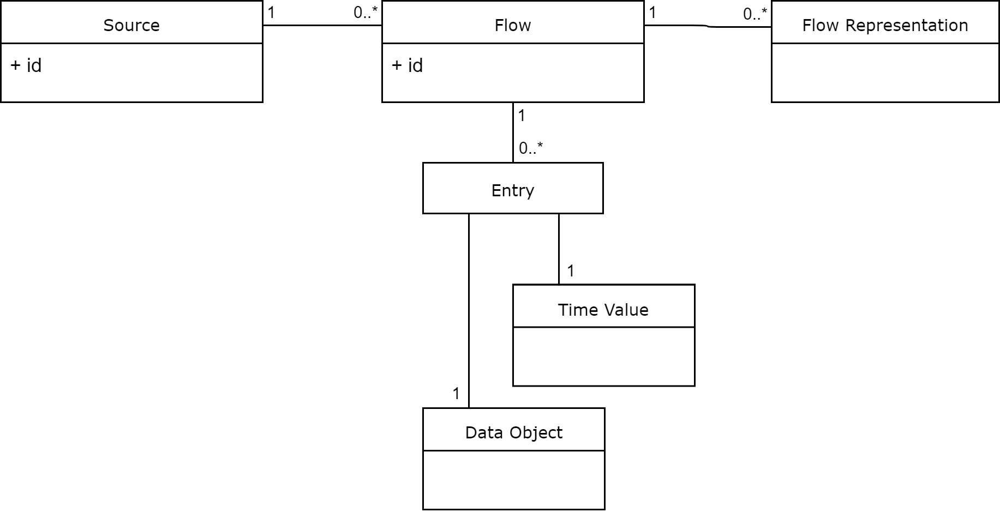

Identity and Timing Model
Model Summary
Building on the JT-NM Reference Architecture, the model uses Sources and Flows.
A Source (identified by a Source ID) is an easy and convenient way to refer to a specific piece of time-based content (some specific information with a specific relationship to time) in a manner that is agnostic to:
- the means used to express / communicate it (for example, multiple different video codecs might be used for one
Source). - the exact quality / accuracy of the expression.
- the exact placement of data at points in time (for example, multiple different video frame rates might be represented by a single
Source).
A Flow (identified by a Flow ID) provides a way to refer to a specific expression of a Source. Each Flow:
- contains data of a specific data type. That is, the data is encoded (and must be interpreted) in a specific way (for example, a
Flowmight use a specific video codec with a specific configuration). -
places the data at a specific set of points in time.
-
achieves a specific quality / accuracy of expression of the
Source.
In summary, a Flow defines a timed-data interface to be used when handling the data. This interface might be implemented in different ways: for example, using different containers or transports for the interchange of the data. These different implementations are called Flow Representations.
The diagram below illustrates an example of the progression from Source to Flow Representation in terms of an increasingly specific representation of some content:

The diagrams below illustrate examples of the progression from Source to Flow Representation in terms of the hierarchy of representation:


Model Definitions
The main entities of the model and their relationships are summarised by the following UML class diagram:

Timing (including Time Values)
Time in the model is assumed to be linear.
A Time Value is a precise (zero duration) instant in time. A Time Value is measured in seconds relative to a zero-point (note: this does not need to be an integer number of seconds).
A Time Context establishes a common zero-point: within a specified Time Context all events at a given Time Value are considered to be synchronised.
Further explanation is provided about timing
Flow (including Data Objects and Entrys)
A Flow:
- has an ID.
- consists of zero or more
Entrys. EachEntryassociates aTime Valuewith aData Object.
Additionally:
- All of the
Data Objects in aFlowhave the same data type. That is, for all of theData Objects in aFlowthe same means of encoding (and also interpreting) the data is used. - All of the
Time Values are in the sameTime Context.
Further explanation is provided about Flows
Notes on the relationship between Grains and Entrys
Flow Representation
- A
Flow Representationis a concrete implementation of exactly oneFlow. It is a practical communication of theData Objects andTime Values defined by thisFlow. - For a
Flow, any differences in the data communicated by itsFlow Representations must be considered negligible for the intended purpose.
Further explanation is provided about Flow Representations
Source
- A
Sourcehas an ID. - Each
Flowis an expression of exactly oneSource. - All the
Flows that are expressions of aSource: - "appear the same" when rendered / decoded (other than differences in quality / accuracy).
- use the same
Time Context.